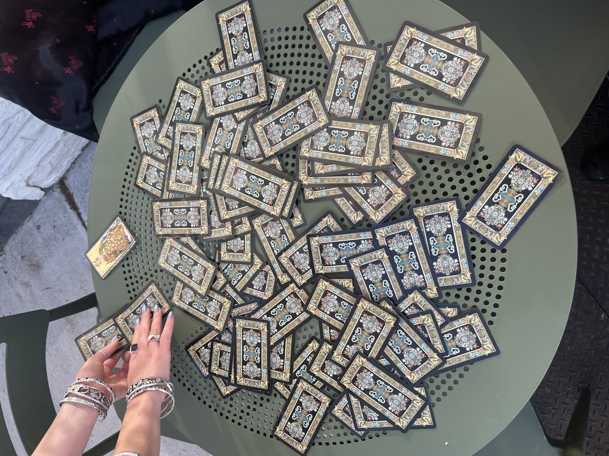

I wish I wasn't so afraid. I think the problem is unlimited resources. I can go anywhere in the world, but it feels like such a cop out. I think my plan for the summer might be going to Thailand to live with Monks and garden for a week then go to Vietnam to work as a bartender. It feels so silly. Like is it a waste of money? Is it giving John Lennon goes to India and pretends to be enlightened, but continues to be fucked up? But, I guess now would be the time to do something dumb like this. Like why not. This isn't Connecticut related I just got back from Connecticut. Also, I spelled Connecticut wrong and had to go back to change the file name. Like would a trip to Southeast Asia fix this about me? Maybe I would be able to spell the names of cities in Vietnam, but probably not Connecticut. I feel like deeply ashamed and bad in a way that stops me from doing anything. I bought a roasary because it felt like repenting might be the only option to repent about feeling bad all the time.

I did Tarot while eating Acai earlier. I pulled 2 past-present-future sets. Tarot #1 Past- upside down chalice = bad with relationships Present- upside down hermit = ending a period of isolation Future- upside down tower = resisting change Tarot #2 Past- upside down swords = mental fog Present- upside down queen of wands = period of insecurity and judging Future- upside down temperance = going crazy and excess food and alcohol So, i guess nothing was good, but it is all accurate. It totally makes sense that mentally ill girls do this. I for sure seem unwell and it read in the cards I guess? The present specifically makes a lot of sense. Also, pictured above, is doing casino style shuffling of the tarot outside of the acai bowl place. We watched casino royale last night. I don't think I need to see another James Bond move. I do like making fun of movies in real time with other people. But I hate action movies. Hopefully, I become spiritually enlightened in a way that can make this interesting.